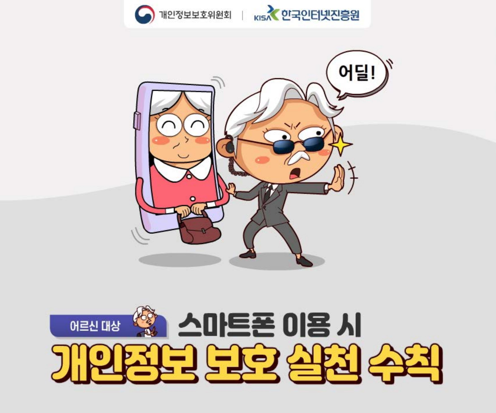

|
 |
 |  |
 |
 |
|
개인정보 관리 및 유출의 위험성 개인정보보호 인식 제고 및 적극적인 보호활동 촉진 |
세대별로 실천해야 할 개인정보 보호 수칙 아동편(초등학생 손자)_개인정보보호 실천_카드뉴스 (출처: 개인정보포털, www.privacy.go.kr) |
세대별로 실천해야 할 개인정보 보호 수칙 중장년편(부모)_개인정보보호 실천_카드뉴스 (출처: 개인정보포털, www.privacy.go.kr) |
세대별로 실천해야 할 개인정보 보호 수칙 어르신편(조부모)_개인정보보호 실천_카드뉴스 (출처: 개인정보포털, www.privacy.go.kr) |
현이네는 저작권 가족(초등용) 엄마, 아빠, 그리고 오빠와 함께 사는 우리친구 현이. 현이네 가족은 ‘저작권 가족’ 이라는 별명이 붙어 있답니다. 왜 많고 많은 별명 중에 하필 ‘저작권 가족’ 일까요? 현이네 가족의 저작권 이야기. 어떤 이야기일지 이제 들어보자고요 (출처: 한국저작권위원회, https://www.copyright.or.kr) |
삼총사의 저작권 도장 수련기(중등용) 아무 생각 없이 다른 사람의 글, 게임, 콘텐츠들을 이용해 오던 장폭우, 박리, 그리고 나보아. 이 세 친구에게 ‘저작권 도장 수련’ 이라는 벌이 내려졌답니다. 듣기만 해도 특이한 도장인데 거기엔 더 요상한 사부님이라는 분이 계시네요 (출처: 한국저작권위원회, https://www.copyright.or.kr) |
디지털공간에서의 올바른 저작권 이용 디지털공간에서의 저작권에 대한 개념 이해, 학생들이 궁금해할 만한 내용을 Q&A와 요약 정리로 풀어냄으로써 저작권에 대한 깊이 있는 이해 |